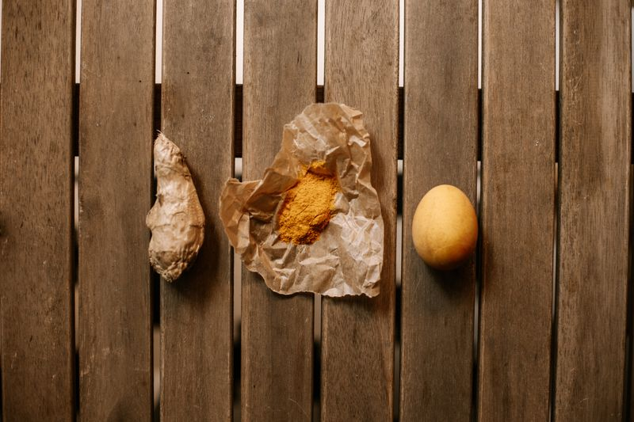

Tea Gingcuci Yellow



ORGA_ME Tea Gingcuci Yellow is a vibrant herbal powder designed to be both energizing and nourishing. This blend is made from premium ginger root, turmeric-like botanicals, and traditional herbal ingredients sourced from smallholder farms across West Africa. The ginger is harvested at peak maturity and gently dried to preserve its active compounds, while the yellow botanicals are carefully selected for their rich curcuminoid content and earthy flavor. Each ingredient is ground into a fine powder and blended in precise ratios to create a bright yellow cup with warming, refreshing flavor that delights the senses. It offers an easy way to add medicinal ginger benefits to your daily routine through a colorful, aromatic beverage that is as beautiful as it is beneficial. The powder format ensures quick dissolution and maximum bioavailability of the active compounds.
Benefits for the Body
Tea Gingcuci Yellow supports digestion, circulation, and immune defense with a warming, caffeine-free herbal profile. Ginger and yellow botanicals create an anti-inflammatory synergy that supports joint health, muscle recovery, and physical comfort. The blend supports detox pathways, liver function, and provides curcuminoids and bioflavonoids that protect cells from oxidative stress, supporting healthy aging and balanced energy.
How to Use
Mix one teaspoon into hot or warm water, stir until dissolved, and enjoy. Use once daily. For a golden latte, blend with warm plant-based milk and honey. Can also be added to smoothies, oatmeal, or yogurt. Store in an airtight container in a cool, dry place.
Ingredients
Ginger root (Zingiber officinale), herbal blend, natural yellow botanicals — no preservatives, no artificial additives.